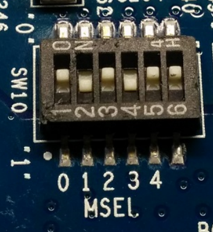
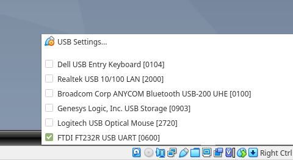
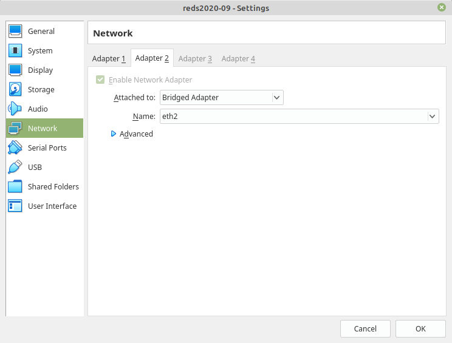
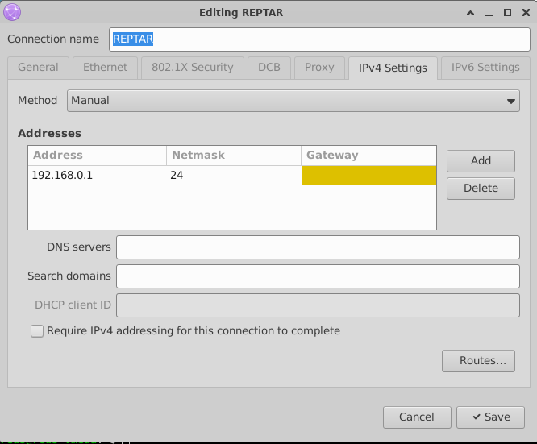
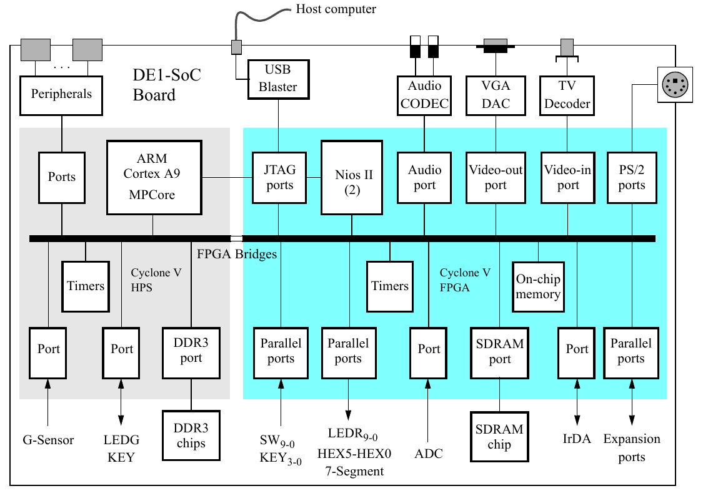

Laboratoire 1 --- Introduction#
Le but de ces laboratoires est de vous familiariser avec les méthodologies de développement pour la création de drivers. En effet (comme pour beaucoup de choses dans la vie réelle), il y a un gros décalage entre ce qu'on peut connaître sur la théorie du fonctionnement d'un système d'exploitation et l'application de ces concepts dans la pratique. En particulier, les drivers se situent dans une couche assez délicate, car ils sont à l'interface entre le monde utilisateur et le matériel sous-jacent, donc ils sont affectés par les erreurs des deux mondes.
Dans ces consignes on vous invitera souvent à pousser vos investigations plus loin. Essayez de donner une réponse par vous-mêmes aux questions qu'on vous posera, cela vous aidera à mieux comprendre le sujet !
Note
Il est souvent très très difficile comprendre si une erreur est liée à une mauvaise manipulation au niveau logiciel utilisateur, à un bug dans le driver, à un bug du hardware, ... !
Objectifs#
Préparation de l'environnement de développement et prise en main de la carte DE1-SoC#
Configurer l'écosystème de développement pour le cours DRV
Communiquer avec la carte via le réseau et la console
Connaître les fonctionnalités de base de U-Boot
Utiliser U-Boot afin d'interagir directement avec les périphériques de la DE1-SoC
Utiliser la toolchain de cross-compilation Linux afin de produire des exécutables destinés à la distribution Linux de la DE1-SoC
Premières interactions HW-SW#
Manipuler le hardware DE1-SoC depuis un logiciel userspace
Matériel nécessaire#
Dans ce laboratoire on préparera l'écosystème de développement qu'on utilisera pour toute la durée du cours.
Pour cela, il vous faudra télécharger les éléments suivants :
Une toolchain de cross-compilation Linux (déjà installée sur les machines de laboratoire et dans la machine virtuelle). On utilisera une toolchain de Linaro, que vous pouvez télécharger ici
Une archive
drv-2026-boot.tar.gzcontenant les fichiers nécessaires au boot de la DE1-SoC [disponible ici]La documentation Altera, disponible dans le git du laboratoire (
material/lab_01/) ou en ligne ici.
Préparation de l'environnement de développement et prise en main de la carte DE1-SoC#
Présentation de la carte DE1-SoC#
La carte DE1-SoC est une carte de développement robuste et low-cost qui intègre un processeur ARM Cortex-A9 (dual core) avec une FPGA (grâce au chip Cyclone V SoC).
Dans ce cours on se focalisera sur le processeur ARM (aussi appelé HPS -- Hard Processor System). Dans d'autres cours vous pourrez découvrir comment faire interagir ce processeur avec la partie FPGA (aussi appelée PL -- Programmable Logic).
Au début du cours on utilisera l'image crée par Intel-Altera dans le contexte du Intel-Altera University Program. On customisera ensuite le noyau pour répondre à nos besoins.
Avertissement
Les outputs des commandes montrés ci-dessous sont ce que j'obtiens sur ma machine. Ces textes changent d'une machine à l'autre, si vous utilisez une machine virtuelle, si vous avez fait des mises à jour, ... Regardez donc ce qui le texte dit, et non seulement s'il est identique à ce qui est noté ci-dessous !!!
Préparation de la carte#
Avant d'allumer la carte, assurez-vous que les switches du MODE SELECT (MSEL) sous la carte soient comme dans la figure ci-dessous.
{kind=link}

Ces switches sont utilisés pour dire à la DE1-SoC comment la FPGA sera configurée. Avec la configuration ci-dessus, ce sera Linux qui se chargera de la tâche.
Configuration du PC#
Pour la suite du cours, on partira du principe que vous travaillez sous Linux --- soit avec une machine virtuelle/machine de laboratoire, soit avec votre ordinateur portable. Pour la connexion avec la carte, il faut que votre carte réseau ait l'adresse 192.168.0.1. La DE1-SoC aura, elle, l'adresse 192.168.0.2.
Important
Les commandes ci-dessous ont été testées dans une distribution de Linux Ubuntu-like. Des différences sont possibles si vous utilisez une autre distribution.
Préparation de la carte SD#
La carte SD fournies a déjà été flashée avec une image Linux complète. En cas de problème, il est possible de la re-flasher en suivant Flasher la carte SD.
Connexion console à la carte#
Pour ouvrir une console sur la carte, deux méthodes sont disponibles
Connexion série (UART), via le connecteur mini-USB situé près du lecteur de cartes SD.
Connexion SSH, via le port ethernet, disponible uniquement une fois que Linux soit complétement boot.
Dans un premier temps, l'UART sera utilisé pour pouvoir interagir avec le bootloader.
Note
Pour la VM, vous devrez donner accès au port USB en cochant la case comme dans la figure qui suit.
{kind=link}

Configuration de le port USB dans VirtualBox.
Si vous ne voyez le port en cliquant, c'est possible que l'utilisateur de la machine hôte ne soit pas dans le groupe vboxusers. Vous pouvez l'ajouter avec :
PC:~$ sudo usermod -aG vboxusers $USER
Il faut ensuite faire logout/login (dans la machine hôte) pour que cela soit pris en compte.
Vérifiez d'abord que la carte soit bien détectée par l'ordinateur à l'aide de la commande lsusb.
La réponse devrait contenir la ligne suivante :
Bus 001 Device 008: ID 0403:6001 Future Technology Devices International, Ltd FT232 USB-Serial (UART) IC
Le convertisseur série/USB de la DE1-SoC apparaît sous la forme d'un fichier ttyUSBX dans le répertoire /dev.
Note
C'est où sur la carte ce chip ? N'hésitez pas à explorer les composants sur la carte à l'aide de la feuille incluse dans la boîte de la carte !
Utilisez l'outil picocom (ou minicom, si vous le préférez) afin d'ouvrir une session de terminal avec la carte.
HOST:~$ picocom -b 115200 /dev/ttyUSB0
Si vous avez des soucis de permissions, cela veut dire que l'utilisateur local n'est pas dans le groupe dialout.
Vous pouvez vérifier cela avec la commande HOST:~$ groups | grep dialout.
Si cela est le cas, vous pouvez ajouter l'utilisateur au groupe avec la commande
HOST:~$ sudo usermod -aG dialout $USER
Ensuite il faudra fermer la session et la rouvrir, afin que les groupes soient lus à nouveau par le système d'exploitation. Il est également possible d'exécuter la commande suivante pour ne pas avoir à fermer la session, mais le groupe ne sera disponible que dans le terminal où elle a été lancée.
HOST:~$ newgrp dialout
Une fois la carte lancée, picocom devrait vous retourner plusieurs lignes, pour terminer avec
Starting rpcbind: OK
[ 2.569091] usb 1-1: New USB device found, idVendor=0424, idProduct=2512
[ 2.575778] usb 1-1: New USB device strings: Mfr=0, Product=0, SerialNumber=0
[ 2.584152] hub 1-1:1.0: USB hub found
Starting network: [ 2.588606] hub 1-1:1.0: 2 ports detected
OK
[ 3.596971] random: nonblocking pool is initialized
ssh-keygen: generating new host keys: RSA DSA ECDSA ED25519
Starting sshd: touch: /var/lock/sshd: No such file or directory
OK
drv-de1 ~ #
Si vous ne voyez rien, tapez sur la touche enter.
Important
Veuillez noter que le noyau par défaut de la DE1-SoC n'est pas tout neuf... on remédiera bientôt à cela !
Important
Pour quitter Picocom, appuyez Ctrl+A suivi de Ctrl+X.
Configuration des serveurs NFS et TFTP#
Ces deux services, sur la machine hôte, vont vous permettre d'échanger des fichiers entre la carte cible et la machine hôte. En particulier, on utilisera TFTP pour "envoyer" à la DE1-SoC le noyau Linux (et le Device Tree), alors qu'on utilisera NFS pour garder une partie du filesystem sur notre ordinateur. Cela a un double avantage :
On travaillera directement sur l'ordinateur, sans devoir à chaque fois échanger explicitement les fichiers entre la DE1-SoC et le PC (plus efficace).
On évitera d'écrire en continu sur la carte SD (donc on évitera de l'endommager pour rien).
Ces configurations devraient déjà être faite sur la VM, à vérifier.
Il faut d'abord vérifier que ces deux services soient installés et actifs. Si ce n'est pas le cas sur votre machine, installez les paquets nfs-kernel-server et tftpd-hpa.
Il faut ensuite éditer le fichier /etc/exports pour dire à NFS quels répertoires on veut partager
et avec qui :
/export 192.168.0.0/24(rw,no_subtree_check,sync,no_root_squash)
/export/drv 192.168.0.0/24(rw,no_subtree_check,sync,no_root_squash)
Bien sûr, maintenant il faudra créer le répertoire /export/drv.
HOST:~$ sudo mkdir -p /export/drv
HOST:~$ sudo chown reds:reds /export -R
Dans ce répertoire on pourra mettre des fichiers à partager avec la DE1-SoC. Il faudra ensuite redémarrer NFS pour que la configuration soit relue.
HOST:~$ sudo service nfs-kernel-server restart
Maintenant, en regardant l'état du serveur NFS, vous devriez avoir (le message pourrait changer selon la version du serveur!!) :
HOST:~$ service nfs-kernel-server status
* nfs-server.service - NFS server and services
Loaded: loaded (/lib/systemd/system/nfs-server.service; enabled; vendor preset: enabled)
Drop-In: /run/systemd/generator/nfs-server.service.d
└─order-with-mounts.conf
Active: active (exited) since Wed 2022-08-18 07:12:14 CEST; 1 day 3h ago
Process: 1021 ExecStartPre=/usr/sbin/exportfs -r (code=exited, status=0/SUCCESS)
Process: 1026 ExecStart=/usr/sbin/rpc.nfsd $RPCNFSDARGS (code=exited, status=0/SUCCESS)
Main PID: 1026 (code=exited, status=0/SUCCESS)
Aug 18 07:12:13 rri-nb01 systemd[1]: Starting NFS server and services...
Aug 18 07:12:14 rri-nb01 systemd[1]: Finished NFS server and services.
Vous pouvez vérifier les répertoires partagés avec la commande
HOST:~$ sudo showmount -e localhost
Export list for host:
/export/drv 192.168.0.0/24
/export 192.168.0.0/24
Vérifions ensuite que le serveur TFTP soit actif (le message pourrait changer selon la version du serveur) :
HOST:~$ /etc/init.d/tftpd-hpa status
* tftpd-hpa.service - LSB: HPA's tftp server
Loaded: loaded (/etc/init.d/tftpd-hpa; generated)
Active: active (running) since Thu 2022-08-19 11:36:18 CEST; 13min ago
Docs: man:systemd-sysv-generator(8)
Process: 2071 ExecStart=/etc/init.d/tftpd-hpa start (code=exited, status=0/SUCCESS)
Tasks: 1 (limit: 9485)
Memory: 1.2M
CGroup: /system.slice/tftpd-hpa.service
└─2095 /usr/sbin/in.tftpd --listen --user reds --address :69 -s /home/reds/tftpboot
Aug 19 11:36:18 reds2022 systemd[1]: Starting LSB: HPA's tftp server...
Aug 19 11:36:18 reds2022 tftpd-hpa[2071]: * Starting HPA's tftpd in.tftpd
Aug 19 11:36:18 reds2022 tftpd-hpa[2071]: ...done.
Aug 19 11:36:18 reds2022 systemd[1]: Started LSB: HPA's tftp server.
Si l'on regarde son fichier de configuration /etc/default/tftpd-hpa, on verra les lignes suivantes :
HOST:~$ cat /etc/default/tftpd-hpa
# /etc/default/tftpd-hpa
TFTP_USERNAME="reds"
TFTP_DIRECTORY="/home/reds/tftpboot"
TFTP_ADDRESS=":69"
TFTP_OPTIONS="-s"
On devra donc mettre dans /home/reds/tftpboot l'image du noyau (zImage) et
le fichier du Device Tree (socfpga.dtb) contenus dans l'archive drv-2026-boot.tar.gz.
Ensuite, donnez les droits de lecture à tout le monde à ces fichiers avec
HOST:~$ cd /home/reds/tftpboot
HOST:~$ chmod 777 *
Configuration réseau de la machine virtuelle#
Avertissement
Lisez cette section uniquement si vous travaillez avec la machine virtuelle !
Pour qu'il soit possible faire le boot et partager des répertoires à travers la machine virtuelle, il faut que la configuration de la machine virtuelle soit adaptée. En particulier, il faudra ajouter une deuxième carte réseau qui soit bridgée sur votre carte Ethernet (celle que vous utilisez pour vous connecter à la DE1-SoC). Le nom de votre carte pourrait changer, dans mon cas, il s'agissait de eth2 (voir image ci-dessous).
{kind=link}

Fig. 2 Ajout de la carte réseau dans Virtualbox.#
Une fois cela fait (il faut que la machine virtuelle soit éteinte), vous devez la configurer afin qu'elle ait l'adresse 192.168.0.1, netmask 255.255.255.0, ne mettez rien comme gateway (voir figure ci-dessous). Redémarrez afin que les changements soient pris en compte (le NetworkManager d'Ubuntu est souvent un peu têtu...). Si l'adresse n'est toujours pas la bonne, cliquez sur la connexion correspondante dans le NetworkManager (cela devrait la recharger et tout devrait être bon).
{kind=link}

Fig. 3 Configuration de la carte réseau dans la VM Linux.#
Assurez-vous que la machine hôte n'ait pas l'adresse 192.168.0.1 pour la carte que vous avez bridgé --- sinon il aura un conflit (vous pouvez changer cette adresse, p.ex., en 192.168.0.11).
Paramétrage réseau sur la machine hôte#
La connexion réseau s'effectue en reliant le port RJ45 de la DE1-SoC à celui de la machine hôte via le câble réseau fourni. Cette connexion permettra de communiquer rapidement avec l'hôte via SSH ainsi que d'utiliser un système de fichier NFS distant et de télécharger le noyau à travers TFTP.
Afin que la carte puisse bien se connecter à la machine hôte, il faut que l'interface réseau à laquelle la DE1-SoC est connectée ait l'adresse 192.168.0.1.
Important
Comme marqué dans la section VM ci-dessus, si vous utilisez la VM alors cela s'applique uniquement à la VM, la machine hôte doit avoir une autre adresse.
Les machines de laboratoire possèdent deux cartes LAN : une reliée au réseau de l'école, l'autre, secondaire, restant disponible
pour connecter un périphérique. Utilisez ifconfig pour identifier laquelle est connectée à la DE1-SoC.
HOST:~$ ifconfig
p1p1 Link encap:Ethernet HWaddr 00:02:b3:9a:01:ef
UP BROADCAST MULTICAST MTU:1500 Metric:1
...
em1 Link encap:Ethernet HWaddr 00:27:0e:28:c2:0d
inet addr:10.192.22.161 Bcast:10.192.22.255 Mask:255.255.248.0
...
Dans ce cas, em1 est connectée au réseau LAN de l'école (réseau 10.192.22.255/21), la carte secondaire est donc p1p1. Par la suite, on configurera le bootloader de la DE1-SoC et le noyau Linux embarqué pour se connecter à l'adresse 192.168.0.1 en utilisant les protocoles NFS et TFTP lors du boot. Si la carte secondaire n'est pas déjà initialisée à cette adresse une fois la DE1-SoC connectée, activez manuellement p1p1 et assignez-lui cette adresse.
Avertissement
Si vous utilisez une distribution Ubuntu-derived (comme c'est le cas pour la machine virtuelle et les machines de laboratoire), changer les paramètres du réseau depuis la ligne de commande n'est pas forcément une bonne idée, car l'outil NetworkManager veut avoir le contrôle absolu des cartes réseau. Vous devrez donc changer ces paramètres à l'aide de l'outil visuel. Si cela ne devait pas fonctionner, redémarrez l'outil avec la commande :
HOST:~$ sudo service NetworkManager restart
Configuration et utilisation de U-Boot#
Dans cette section on verra comment configurer le système pour que le dispositif de boot utilise TFTP et NFS pour récupérer le noyau et le filesystem depuis l'ordinateur.
Au démarrage, vous pouvez appuyer sur une touche (via picocom) pour arrêter le démarrage automatique
de U-Boot et jouer avec ses paramètres.
À l'écran vous devriez avoir un message du type :
U-Boot 2013.01.01 (Apr 25 2014 - 04:59:35)
CPU : Altera SOCFPGA Platform
BOARD : Altera SOCFPGA Cyclone V Board
I2C: ready
DRAM: 1 GiB
MMC: ALTERA DWMMC: 0
In: serial
Out: serial
Err: serial
Net: mii0
Hit any key to stop autoboot: 0
Configuring PHY skew timing for Micrel ksz9021
Waiting for PHY auto negotiation to complete.. done
ENET Speed is 1000 Mbps - FULL duplex connection
Using mii0 device
TFTP from server 192.168.0.1; our IP address is 192.168.0.2
Filename 'uImage'.
Load address: 0x7fc0
Loading: T T T T T T T T T T
Retry count exceeded; starting again
Using mii0 device
TFTP from server 192.168.0.1; our IP address is 192.168.0.2
Filename 'uImage'.
Load address: 0x7fc0
Loading: T T
U-Boot SPL 2013.01.01 (Jan 28 2015 - 14:28:04)
BOARD : Terasic DE1_SoC Board
################################################################################
##################################= =#
########=-=#######################= -- =#
######- =#######################= ####- =###### =#
######- ###############- -=##=##= ####- ######## =#
####= =##- -### ##= -####### ###### ####- #####- - =#
#### ## ### ## -##= -=--=###= ####==# ####- #### =#
######- ###- ##- -### =####= =====###= ####- #### #### =#
######- ### =##### #####= ####-=###= -=###- ####- ##### =#
######- -#= - =## #####= #### -###= #=-=#### ####- ########- ##
####### =##= ## #####= -########= ####### ####- =###### =#
#########==######====####==#######= - --- -- ---- =#
##################################= =#
################################################################################
BOARD : Terasic DE1_SoC Board
CLOCK: EOSC1 clock 25000 KHz
CLOCK: EOSC2 clock 25000 KHz
CLOCK: F2S_SDR_REF clock 0 KHz
CLOCK: F2S_PER_REF clock 0 KHz
CLOCK: MPU clock 800 MHz
CLOCK: DDR clock 400 MHz
CLOCK: UART clock 100000 KHz
CLOCK: MMC clock 50000 KHz
CLOCK: QSPI clock 400000 KHz
INFO : Watchdog enabled
SDRAM: Initializing MMR registers
SDRAM: Calibrating PHY
SEQ.C: Preparing to start memory calibration
SEQ.C: CALIBRATION PASSED
SDRAM: 1024 MiB
ALTERA DWMMC: 0
U-Boot 2013.01.01 (Apr 25 2014 - 04:59:35)
CPU : Altera SOCFPGA Platform
BOARD : Altera SOCFPGA Cyclone V Board
I2C: ready
DRAM: 1 GiB
MMC: ALTERA DWMMC: 0
In: serial
Out: serial
Err: serial
Net: mii0
Hit any key to stop autoboot:
Note
Si vous l'avez raté, redémarrez simplement la carte avec la commande drv-de1 ~ # reboot.
Avertissement
Pour le redémarrage, il y a un bouton WARM_RST sur la carte (à droite des gros boutons KEY 3-0), veuillez l'utiliser à la place du bouton POWER ON/OFF, votre carte sera bien plus heureuse !
Vous pouvez afficher la valeur actuelle des paramètres passés à U-Boot à l'aide de la commande :
SOCFPGA_CYCLONE5:~# printenv
U-Boot est un programme relativement complexe, mettant à la disposition de
l'utilisateur une console interactive avec support des variables d'environnement
et un jeu de commandes élaboré.
De plus, U-Boot fournit un support matériel basique pour certains périphériques,
comme les cartes réseau LAN et les périphériques flash, les cartes SD ou
la flash embarquée.
La commande help permet de visualiser les commandes disponibles.
Pour un manuel complet, se référer à la documentation officielle.
En donnant la commande boot, le système va continuer la procédure de démarrage
établie par défaut.
Vous pouvez le modifier pour qu'il fasse booter la carte depuis le noyau Linux
stocké sur votre PC (dans le répertoire /home/reds/tftpboot)
en ajoutant les lignes qui suivent au prompt de U-Boot.
SOCFPGA_CYCLONE5:~# setenv ethaddr "12:34:56:78:90:12"
SOCFPGA_CYCLONE5:~# setenv serverip "192.168.0.1"
SOCFPGA_CYCLONE5:~# setenv ipaddr "192.168.0.2"
SOCFPGA_CYCLONE5:~# setenv gatewayip "192.168.0.1"
SOCFPGA_CYCLONE5:~# setenv bootdelay "2"
SOCFPGA_CYCLONE5:~# setenv loadaddr "0xF000"
SOCFPGA_CYCLONE5:~# setenv bootcmd "mmc rescan; tftpboot ${loadaddr} zImage; tftpboot ${fdtaddr} ${fdtimage}; run fpgaload; run bridge_enable_handoff; run mmcboot"
SOCFPGA_CYCLONE5:~# setenv mmcboot "setenv bootargs console=ttyS0,115200 root=${mmcroot} rw rootwait ip=${ipaddr}:${serverip}:${serverip}:255.255.255.0:de1soclinux:eth0:on; bootz ${loadaddr} - ${fdtaddr}"
SOCFPGA_CYCLONE5:~# saveenv
Note
Pourriez-vous expliquer les lignes ci-dessus ?
Le noyau Linux accepte une longue liste de paramètres, vous pouvez avoir
plus d'informations en lisant le fichier Documentation/admin-guide/kernel-parameters.txt
dans les sources du noyau.
Note
Est-ce que ${loadaddr} - ${fdtaddr} est une soustraction de deux adresses dans la mémoire ?
Note
La configuration de U-Boot sauvegardée dans la mémoire de la carte est assez complexe. Explorez les différentes valeurs et essayez d'effectuer le boot de la carte en changeant (de façon temporaire!! --- c.-à-d., sans utiliser la commande saveenv) l'adresse du PC, le répertoire où le noyau est stocké, ...
Maintenant, en démarrant la DE1-SoC, vous devriez pouvoir faire le boot du système en utilisant le
noyau qui vous a été fourni (celui dans /home/reds/tftpboot). Vous devriez donc avoir un
output qui se termine par
Starting logging: OK
Starting syslogd: FAIL
Starting klogd: FAIL
Running sysctl: OK
Initializing random number generator... [ 9.536260] random: crng init done
done.
Starting rpcbind: OK
Starting network: ip: RTNETLINK answers: File exists
ip: RTNETLINK answers: File exists
FAIL
Starting sshd: touch: /var/lock/sshd: No such file or directory
OK
drv-de1 ~ # uname -ar
Linux drv-de1 6.1.55-g57cf7f3b7f73 #5 SMP Thu Feb 19 08:48:38 CET 2026 armv7l GNU/Linux
Vérification des toolchains#
Pendant les laboratoires, la toolchain arm-linux-gnueabifh (version 11.3.1) sera utilisée pour la compilation d'exécutables Linux.
Note
Pourriez-vous expliquer la signification des différents mots composant le nom de la toolchain? Pourquoi on a spécifié un numéro de version ? Qu'est-ce qui se passe si l'on prend tout simplement la toute dernière version de la toolchain?
Vérifiez la version de la toolchain par défaut :
HOST:~$ arm-linux-gnueabihf-gcc --version
S'il s'agit d'une version différente, vérifiez que la version 11.3.1 existe bien :
HOST:~$ arm-linux-gnueabihf-gcc-11.3.1 --version
Auquel cas, ajouter -11.3.1 lors des appels suivants à arm-linux-gnueabihf-gcc.
Pour utiliser les autres outils fournis avec le compilateur (comme objdump), il faut mettre le chemin complet vers les exécutables qui se trouvent dans le dossier /opt/toolchains/gcc-linaro-11.3.1-2022.06-x86_64_arm-linux-gnueabihf/bin/ sur la VM.
Finalement, vérifiez que la toolchain fonctionne correctement. Pour cela vous pouvez utiliser la commande suivante:
HOST:~$ echo "int main(){}" | arm-linux-gnueabihf-gcc -x c - -o /tmp/toolchain_test | file /tmp/toolchain_test
Note
Pourriez-vous expliquer ce que la ligne ci-dessus fait?
Si tout marche bien, vous devriez avoir une réponse du type:
/tmp/toolchain_test: ELF 32-bit LSB executable, ARM, EABI5 version 1 (SYSV), dynamically linked, interpreter /lib/ld-linux-armhf.so.3, BuildID[sha1]=b3a920e814dca1c9c53e894c191645227fe75d43, for GNU/Linux 3.2.0, with debug_info, not stripped
Note
Savez-vous interpréter ces réponses ?
Note
Que signifie "not stripped" ?
Compilation croisée sous DE1-SoC#
La compilation croisée standard nécessite quelques précautions supplémentaires par rapport à une compilation native :
La toolchain doit être compatible et paramétrée pour la cible choisie. Pour garantir une compatibilité entre le code généré par la toolchain et le système auquel il est destiné, il faut dans tous les cas que le compilateur utilisé pour compiler l'OS présent sur la cible et celui utilisé pour compiler l'application aient la même interface binaire (ABI).
Le chemin des bibliothèques et des includes spécifiques à la carte cible doivent être précisés. Les bibliothèques présentes dans la machine hôte ayant été compilées pour une architecture différente, elles ne sont pas exécutables sur la carte cible.
Les versions des bibliothèques et includes utilisés doivent être celles du système cible. Dans le cas de la compilation d'un driver Linux, les sources du noyau doivent être disponibles et leur version doit également correspondre.
Pour répondre au premier point de la problématique précédente, nous utilisons ici la même toolchain qui a été utilisée pour générer la distribution Linux cible, c'est-à-dire arm-linux-gnueabihf --- gnueabihf étant une ABI normalisée pour les systèmes ARM possédant une unité de calcul hardware pour les flottants ("hard float") --- et avec un numéro de version très proche.
Il est simple de cross-compiler notre première application, un "Hello world" classique.
#include <stdio.h>
int main()
{
printf("Hello, cross-compiled world!\n");
return 0;
}
Le fichier stdio.h inclus dans le code est celui de la libc spécifique à
la toolchain installée. Pas besoin, pour les headers appartenant à des
bibliothèques fournies avec la toolchain (libc, libm, libcrypt,
libpthread et quelques autres) de préciser un dossier d'inclusion spécifique.
L'invocation du compilateur s'effectue donc de la même manière que l'invocation
d'un compilateur natif :
HOST:~$ arm-linux-gnueabihf-gcc hello.c -o hello
HOST:~$ ls -lha hello
-rwxrwxr-x 1 reds reds 12K Feb 19 10:58 hello
HOST:~$ file hello
hello: ELF 32-bit LSB executable, ARM, EABI5 version 1 (SYSV), dynamically linked, interpreter /lib/ld-linux-armhf.so.3, BuildID[sha1]=84e0faccb7a64c74572737c88bd82ac2603519d0, for GNU/Linux 3.2.0, with debug_info, not stripped
Note
Qu'est-ce qui se passerait si vous essayiez d'exécuter ce fichier sur votre PC ? Pourquoi ?
Le fichier résultant est un exécutable linké dynamiquement. Il est également possible de procéder à une compilation statique, si les bibliothèques utilisées ne sont pas disponibles sur la cible (ce qui n'est évidemment pas le cas ici, vu que seule la libc est utilisée).
HOST:~$ arm-linux-gnueabihf-gcc hello.c -o hello_static -static
HOST:~$ ls -al hello_static
-rwxrwxr-x 1 reds reds 2.7M Feb 19 11:25 hello_static
HOST:~$ file hello_static
hello_static: ELF 32-bit LSB executable, ARM, EABI5 version 1 (GNU/Linux), statically linked, BuildID[sha1]=3a0c5e6c32e1d9ac6996381bc770e35c2f8194ec, for GNU/Linux 3.2.0, with debug_info, not stripped
Comme la taille de l'exécutable s'en retrouve dramatiquement accrue, la compilation statique est réservée aux cas spéciaux.
Pour tester, mettez l'exécutable dans le dossier /export/drv/ de la machine hôte et depuis la cible exécutez :
drv-de1 ~ # ~/drv/hello
Il se peut que le dossier drv ne se soit pas mounter correctement. Si c'est le cas, le dossier est vide,
et il est possible de le remounter en exécutant :
drv-de1 ~ # mount -a
Accès aux périphériques du CycloneV-SoC depuis U-Boot#
La plupart des périphériques du CycloneV-SoC ne sont pas accessibles au core ARM qu'à travers la FPGA:
{kind=link}

Fig. 4 Diagramme du DE1-SoC computer (Figure 1 dans "DE1-SoC Computer System with ARM Cortex-A9").#
En particulier, grâce au bitstream chargé au démarrage, les différents périphériques sont accessibles en memory-map en utilisant des accès mémoire.
La liste des adresses mémoire est disponible dans le chapitre 7 du document "DE1-SoC Computer System with ARM Cortex-A9" (page 29). La section 2.9 (page 7) de ce même document donne plus d'information sur les registres des périphériques qui seront utilisés (LEDs, switchs, ...).
Avertissement
Avant d'essayer les commandes ci-dessous, assurez-vous que le bon bitstream soit chargé en faisant un boot complète du système. A ce moment-là, dès que vous aurez le prompt Linux, tapez une commande
drv-de1 ~ # reboot
et arrêtez le système au prompt U-Boot au redémarrage.
U-Boot possède un ensemble de commandes dédiées à la manipulation de données :
la commande memory display
md.{b|w|l} addr length
permet d'afficher
lengthdonnées depuis l'adresseaddr, sous un certain format :md.baffichant les données sous forme de mots de 8 bitsmd.waffichant les données sous forme de mots de 16 bitsmd.laffichant les données sous forme de mots de 32 bits
Notez que si vous affichez 8 ou 16 bits d'un registre 32 bits, vous allez récupérer les bytes de poids faible, et non pas ceux de poids fort.
Note
Est-ce que cela nous dit quelque chose sur l'endianness du MCU?
la commande associée memory write
mw.{b|w|l} addr value (n)
permet de modifier la valeur de
ndonnées à partir deaddr, avec une taille d'élément de donnée de 1, 2 ou 4 bytes.
Exemple#
Les commandes ci-dessous affichent le contenu de la mémoire à l'adresse de chargement de U-Boot sous chacun des trois formats disponibles.
SOCFPGA_CYCLONE5:~# md.b 0x80008000 0x1
80008000: 46 F
SOCFPGA_CYCLONE5:~# md.w 0x80008000 0x1
80008000: 4c46 FL
SOCFPGA_CYCLONE5:~# md.l 0x80008000 0x1
80008000: eb004c46 FL..
SOCFPGA_CYCLONE5:~# md.b 0x80008000 0x4
80008000: 46 4c 00 eb FL..
SOCFPGA_CYCLONE5:~# md.w 0x80008000 0x4
80008000: 4c46 eb00 9000 e10f FL......
SOCFPGA_CYCLONE5:~# md.l 0x80008000 0x4
80008000: eb004c46 e10f9000 e229901a e319001f FL........).....
Exercice 1
Expliquez les différences entre les lignes ci-dessus.
Utilisez la commande
mdpour lire la valeur binaire écrite avec les switches et écrivez-la sur les LEDs.Qu'est-ce qui se passe si vous essayez d'accéder à une adresse qui n'est pas alignée (par exemple 0x01010101) et pourquoi ?
Exercice 2
Écrivez un script (à l'aide d'une variable d'environnement) U-Boot qui va alterner, chaque seconde, entre afficher 🯰🯰🯰🯰🯰🯰 et 🯵🯵🯵🯵🯵🯵 sur les affichages à 7-segments.
Vous trouverez plus d'information sur le shell d'U-Boot via les liens suivants :
Accès aux périphériques du DE1-SoC depuis Linux#
A partir de cette étape, comme Linux est démarré, il est possible de se connecter à la carte via SSH qui est un peu plus agréable à utiliser, car il support correctement les changements de la taille de la fenêtre du terminal. La carte étant déjà configurée, il suffit d'exécuter
HOST:~$ ssh root@192.168.0.2
Le même type d'accès aux ressources vu dans la section précédente est possible
depuis Linux.
En particulier, il est possible d'ouvrir un fichier spécial (/dev/mem)
et, après l'avoir mappé en mémoire avec la fonction mmap(), taper des
valeurs directement dans la mémoire.
Pour plus d'information sur mmap, regardez dans sa documentation man
ainsi que cet exemple.
Attention cette exemple utilise PAGE_SIZE comme adresse qui est défini à la compilation, or tous les systèmes n'ont pas la même taille de page. Regardez dans la description man de mmap pour trouver une alternative !
Avertissement
En faisant ça, vous avez accès direct à toute la mémoire... Sans aucune supervision ni limitation !
Cette approche est très utile pour tester rapidement un dispositif --- vous pouvez en effet accéder à ses registres et lire/écrire des valeurs, sans devoir écrire un driver.
Note
Pouvez-vous identifier au moins deux gros problèmes de cette approche ?
Exercice 3
Écrivez un logiciel user-space en C qui utilise
/dev/mempour accéder aux périphériques. Au démarrage, le logiciel commence par afficherAsur l'affichage HEX0. Ensuite, l'utilisateur peut contrôler la lettre affichée sur HEX0 de la façon suivante:
- En appuyant sur KEY0, le caractère actuellement affiché est décrémenté
ZdevientY, ... ,BdevientASi
Aest affiché, on recommence àZ
- En appuyant sur KEY1, le caractère actuellement affiché est incrémenté
AdevientB, ... ,YdevientZSi
Zest déjà affiché, on recommence àADe plus, le code ASCII de la lettre affichée doit être représenté en binaire sur les LEDs.
Exemple: si
Aest affiché (soit 0x41 / 0b1000001 en ASCII), LED0 et LED6 doivent être alluméeNote: vous pouvez trouver un exemple de police de caractère pour afficheurs 7-segments sur cette page Wikipedia. Libre à vous de vous en inspirer.
Bonus 1: éteignez les afficheurs 7-segments et les LEDs en partant (quand le programme est arrêté avec Ctrl+C) pour éviter de faire fondre la banquise inutilement.
Note
Quel est le souci principal dans l'écriture de ce logiciel ?
Travail à rendre et critères d'évaluation#
Dans le cadre de ce laboratoire, vous devez rendre les deux exercices relatifs à U-Boot et les exercices sous Linux.
S'il est demandé d'écrire du code, ce code doit se trouver dans un fichier avec un nom permettant de clairement identifier l'exercice correspondant (p. ex. ex<n>.c où <n> correspond au numéro de l'exercice). Il n'est pas nécessaire de renommer les fichiers déjà existants. Si un exercice réutilise un fichier précédent, celui-ci doit être dupliqué pour le nouvel exercice, sauf indication contraire.
Si le code a pour but d'être exécuté sur la DE1-SoC, il doit être compilé en "compilation croisée", c.-à-d. en utilisant la toolchain mentionnée dans le Laboratoire 1 --- Introduction.
N'oubliez pas de mettre votre prénom et nom !
Les exercices sont à faire individuellement. Copier la solution d'un autre et changer le nom/l'ordre des variables n'est pas toléré.
La date limite est celle communiquée dans l'annonce sur Moodle.
Vous devez rendre une archive .tar.gz contenant :
le code source de vos solutions et tous les fichiers nécessaires,
un fichier
README.md- les éventuels soucis rencontrés qui péjore le rendu - les choix d'implémentation "spéciaux" (si trop long pour expliquer en commentaire)
Les laboratoires sont évalués à l'aide de questionnaire sur le contenu de ceux-ci. Pour avoir accès à ces évaluations, les laboratoires doivent être rendus à temps. Nous nous réservons le droit de tester les rendus pour vérifier qu'ils ont été faits.